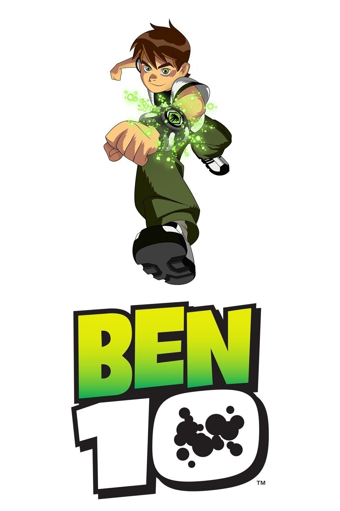

"Initially cocky, childish and arrogant, Ben's immaturity and attention-seeking behavior often led him to joke around regardless of the situation, although most of this attitude comes from Ben using humor to mask his fears. His use of puns, witty quips, and other forms of humor is actually his inner coping mechanism that has apparently kept him sane all these years. Despite some of his childish behavior, Ben is heroic, caring and generally good-natured, always willing to save others at any time. Professor Paradox has praised Ben's good nature, going so far as to say he had the gift to make the right choices at the right moments. Ben does not give up and would not let anyone stop him from doing what is right for those in need, especially his family, friends and mentors, or to bring enemies down, even when he once got a broken arm."

"Rigby can be best described as a "wild adult", even though he is past his teenage years. He becomes frustrated, frightened, confused or sad very easily, making his behavior very predictable. Rigby is also very arrogant, impulsive, impatient and immature at times, giving him the personality of a child. Thus, he can be considered the opposite of Mordecai, who demonstrates far more responsibility and maturity than him (in most conditions). He even changed his name to Trash Boat one time because he thought it would sound cool and edgy."